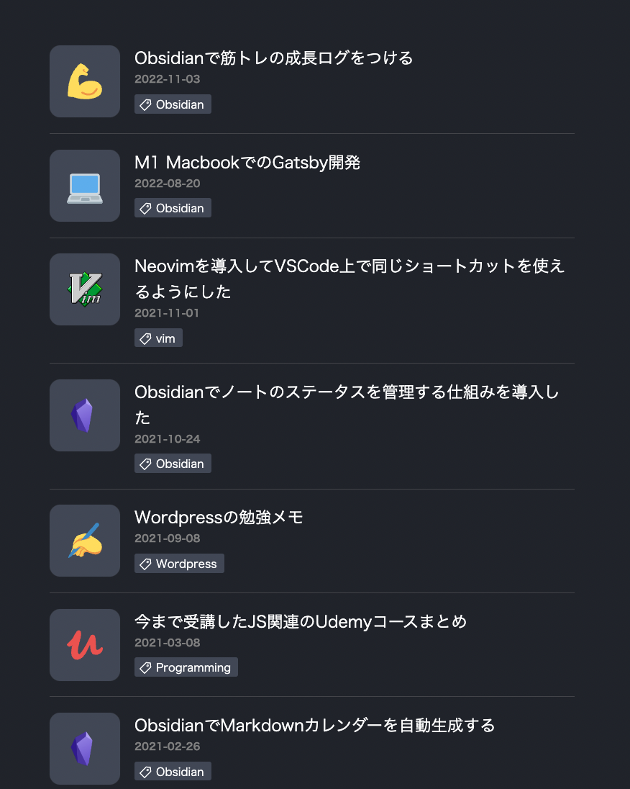

← Go Back
🧪 Gatsby製の技術ブログ

✏️ Description
GatsbyJS製の個人技術ブログです。デザインから実装まで全て一人で行いました。Web開発について学んだことの発信をしています。
僕自身が個人の技術ブログを開発の時に参考にすることが多いので、ユーザーが読みやすいように意識して開発しました。
🔗 Links
🚀 Functionalities
- ページネーション
- ダークモード
- Google Analyticsによるアクセス分析
- 画像のレイジーローディング
- レスポンシブデザイン
💻 Tech Stack
- React
- Gatsby.js
- GraphQL
- Styled Components
- Google Analytics